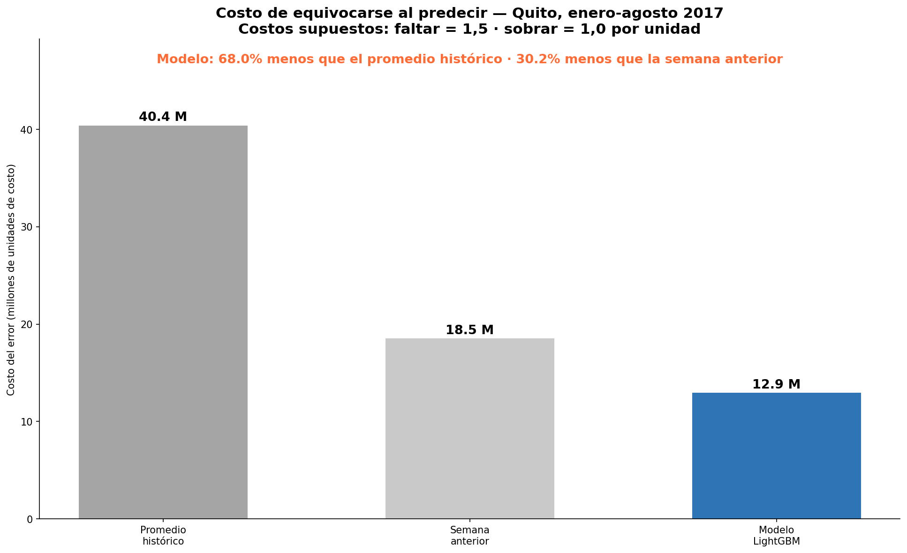

Caso · Python · LightGBM · scikit-learn
Cuánto le cuesta a un supermercado equivocarse al predecir la demanda
Un modelo de previsión diaria para 18 tiendas de Quito, comparado con dos referencias y traducido a costo, porque quedarse sin stock no cuesta lo mismo que tirar producto.
La pregunta
¿Un modelo de machine learning reduce el error lo suficiente como para que le importe al negocio?
Predecir de menos es venta perdida; predecir de más, en lácteos o panadería, es producto que se tira. El mejor modelo no es el más preciso en abstracto, sino el que menos le cuesta a la tienda.
Los datos
Ventas diarias reales de Corporación Favorita, una cadena de supermercados de Ecuador: más de 3 millones de registros entre 2013 y 2017. Me centré en las 18 tiendas de Quito y en las 6 familias de producto que concentran el 80% de la facturación.
El análisis exploratorio ya dio pistas para el negocio: las promociones duplican las ventas (+104%), el domingo es el día de más demanda y los feriados nacionales apenas las mueven (+0,3%).
El enfoque
- Un modelo LightGBM con 13 variables: calendario, ventas de 7, 14 y 28 días antes, medias móviles, precio del petróleo, promociones, tienda y familia.
- Entrenamiento hasta 2016 y prueba con enero–agosto de 2017, datos que el modelo no vio. Es una previsión a un día vista.
- Dos referencias para medir si aporta: el promedio histórico de cada serie y, más exigente, repetir la venta del mismo día de la semana anterior.
Lo que encontré
-
−31,5%
de error frente a repetir la semana anterior
El error medio baja de 610 a 418 unidades por día y serie. Es la comparación que demuestra que el modelo aporta.
-
−62,7%
de error frente al promedio histórico
De 1.121 a 418 unidades: lo que gana una tienda que hoy repone con promedios.
-
−68%
de costo del error, con costos supuestos
Si faltar cuesta 1,5 veces más que sobrar, el costo de equivocarse baja un 68% frente al promedio histórico y un 30% frente a la semana anterior.

Qué haría distinto
Usaría costos reales por familia de producto en lugar de supuestos, para que el impacto se mida en dinero. Y probaría un horizonte de una semana, más cercano a cómo se planifican las compras de una tienda.